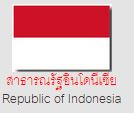

ประเทศสาธารณรัฐอินโดนีเซีย

รูปแบบการปกครอง ประชาธิปไตย ที่มีประธานาธิบดีเป็นประมุข และหัวหน้าฝ่ายบริหาร
ประธานาธิบดี ดร.ซูซิโล บัมบัง ยูโดโยโน (Susilo Bambang Yudhoyono) (ตุลาคม 2547)
รมว.กต. ดร.ฮัสซัน วิรายูดา (Hassan Wirajuda) (ตุลาคม 2547)
ที่ตั้ง อินโดนีเซียมีพื้นที่ 5,193,250 ตารางกิโลเมตร เป็นแผ่นดิน 2,027,087ตารางกิโลเมตร เป็นพื้นที่ทะเล 3,166,163 ตารางกิโลเมตร เป็นประเทศหมู่เกาะที่มีขนาดใหญ่ที่สุดในโลก ประกอบด้วยเกาะใหญ่น้อยกว่า 17,508 เกาะ รวมอยู่ในพื้นที่ 4 ส่วน คือ
- หมู่เกาะซุนดาใหญ่ ประกอบด้วยเกาะชวา สุมาตรา บอร์เนียว และสุลาเวสี
- หมู่เกาะซุนดาน้อย ประกอบด้วยเกาะเล็ก ๆ ที่ตั้งอยู่ทางตะวันออกของเกาะชวา มีเกาะบาหลี ลอมบอก ซุมบาวา ซุมบา ฟอลเรส และติมอร์
- หมู่เกาะมาลุกุ หรือ หมู่เกาะเครื่องเทศ ตั้งอยู่ระหว่างสุลาเวสี กับอิเรียนจายาบนเกาะ นิวกีนี
- อีเรียนจายา อยู่ทางทิศตะวันตกของปาปัวนิวกินี
- อินโดนีเซียตั้งอยู่บนเส้นทางเชื่อมต่อระหว่างมหาสมุทรแปซิฟิกกับมหาสมุทรอินเดีย และเป็นสะพานเชื่อมระหว่างทวีปเอเชียกับออสเตรเลีย ทำให้อินโดนีเซียสามารถควบคุมเส้นทางการติดต่อระหว่างมหาสมุทรทั้งสอง ผ่านช่องแคบที่สำคัญต่างๆ เช่นช่องแคบมะละกา ช่องแคบซุนดา และช่องแคบล็อมบอก ซึ่งเป็นเส้นทางขนส่งน้ำมันจากตะวันออกกลางมายังประเทศในภูมิภาคเอเชียตะวันออกเฉียงใต้และเอเชียตะวันออก
ภูมิอากาศ - อินโดนีเซียมีอากาศร้อนชื้นแบบศูนย์สูตร ประกอบด้วย 2 ฤดู คือ ฤดูแล้ง (พฤษภาคม-ตุลาคม) และฤดูฝน (พฤศจิกายน-เมษายน)
ประชากร - ประมาณ 220 ล้านคน ประกอบด้วยชนพื้นเมืองหลากหลายกลุ่มซึ่งพูดภาษาต่างกันกว่า 583]
ภาษา ร้อยละ 61 อาศัยอยู่บนเกาะชวา
ศาสนา ชาวอินโดนีเซียร้อยละ 87 นับถือศาสนาอิสลาม ร้อยละ 6 นับถือศาสนาคริสต์นิกายโปรแตสแตนท์ ร้อยละ 3.5 นับถือศาสนาคริสต์นิกายแคทอลิก
ร้อยละ 1.8 นับถือศาสนาฮินดู และร้อยละ 1.3 นับถือศาสนาพุทธ
ภาษา ภาษาประจำชาติ ได้แก่ ภาษาอินโดนีเซีย หรือ Bahasa Indonesia
การศึกษา ร้อยละ 90 ของประชากรสามารถอ่านออกเขียนได้ อินโดนีเซียมีมหาวิทยาลัยของรัฐ 49 แห่ง และของเอกชนกว่า 950แห่ง
ทรัพยากรธรรมชาติ
- อินโดนีเซียเป็นประเทศที่อุดมสมบูรณ์ด้วยทรัพยากรธรรมชาติ ทรัพยากรสำคัญประกอบด้วย น้ำมันปิโตรเลียม ก๊าซธรรมชาติ ถ่านหิน ดีบุก ทองแดง นิเกิล บ๊อกไซด์ ทอง เงิน และแร่เหล็ก นอกจากนี้ อินโดนีเซียมีทรัพยากรป่าไม้ถึงร้อยละ 59 ของพื้นที่บนพื้นดินทั้งหมด ทรัพยากรประมงจำนวนมาก ซึ่งยังไม่ได้รับการสำรวจ
เมืองหลวง ได้แก่ จาการ์ตา
เมืองสำคัญ ได้แก่ จาการ์ตา สุราบายา บันดุง เมดาน เซมารัง ปาเลมบัง
การเมืองการปกครอง
- การปกครองประเทศของในช่วงหลังจากได้รับเอกราชไม่สามารถสร้างเสถียรภาพทางการเมืองและเศรษฐกิจให้แก่ประเทศได้ ทำให้ประธานาธิบดีซูการ์โนประกาศยุบสภา ในปี พ.ศ. 2502 และได้จัดตั้งสภาที่ปรึกษาประชาชนขึ้นแทน และนำการปกครองแบบ “ประชาธิปไตยแบบชี้นำ” มาใช้ นโยบายต่างประเทศในช่วงนี้เน้นการเผชิญหน้ากับเนเธอร์แลนด์และมาเลเซีย ต่อมา ในเดือนกันยายน พ.ศ. 2508 เกิดการปฏิวัติโดยกลุ่มนายทหาร โดยได้รับการสนับสนุนจากพรรคคอมมิวนิตส์อินโดนีเซีย ซึ่งได้รับการสนับสนุนด้านการเงินและยุทธโธปกรณ์จากจีน การปฏิวัตินำไปสู่การนองเลือด โดยได้มีการสังหารสมาชิกพรรคคอมมิวนิตส์ และสมาชิกองค์กรต่างๆ ที่เกี่ยวข้องถึง 750,000 คน
- ในเดือนมีนาคม 2509 พันตรีซูฮาร์โตได้เข้ายึดอำนาจการปกครอง และรักษาการในตำแหน่งประธานาธิบดี ในเดือนมีนาคม 2510 และได้รับเลือกตั้งให้เป็นประธานาธิบดีอินโดนีเซียต่อมาถึง 7 สมัย ประธานาธิบดีซูฮาร์โตปกครองประเทศโดยใช้\"กลุ่มอาชีพ\" หรือโกลคาร์(ซึ่งต่อมาได้เปลี่ยนเป็นพรรคโกลคาร์) เป็นฐานเสียงสนับสนุนอำนาจทางการเมือง รวมทั้งได้รับการสนับสนุนจากกองทัพ โดยกำหนดให้ทหารมี “ทวิภารกิจ” คือ มีบทบาททางการเมืองและสังคม นอกเหนือจากบทบาทด้านความมั่นคง ประธานาธิบดีซูฮาร์โตประสบความสำเร็จในการพัฒนาเศรษฐกิจของอินโดนีเซียให้เจริญก้าวหน้า แต่ปัญหาการคอรัปชั่น ระบบอุปถัมภ์ ทำให้ประชาชนไม่พอใจที่ผลประโยชน์ทางเศรษฐกิจส่วนใหญ่ตกอยู่กับครอบครัวประธานาธิบดีซูฮาร์โตและพวกพ้อง
- ต่อมา เมื่อเกิดวิกฤติการเงินและเศรษฐกิจในปี พ.ศ. 2540 จนรัฐบาลอินโดนีเซียต้องลงนามความตกลงกู้เงินจาก IMFและมีภาระผูกพันในการปฏิรูปเศรษฐกิจ ภาวะเศรษฐกิจฝืดเคืองทำให้ประชาชนไม่พอใจรัฐบาลมากขึ้น และในปี 2541 ได้เกิดเหตุการณ์ยิงนักศึกษามหาวิทยาลัยตรีสักตีเสียชีวิต ซึ่งได้ลุกลามเป็นจลาจล และการเผาทำลายอาคารร้านค้า ในระหว่าง 12-15พ.ค. 2541 หลายฝ่ายรวมทั้งทหารได้สร้างแรงกดดันจนประธานาธิบดีซูฮาร์โตประกาศลาออกจากตำแหน่งใน 21 พ.ค. 2541 และมอบตำแหน่งประธานาธิบดีแก่นายบาคารุดดิน ยูซุฟ ฮาบิบี รองประธานาธิบดี ตามข้อกำหนดในรัฐธรรมนูญ
- ประธานาธิบดีฮาบิบีได้ประกาศให้มีการเลือกตั้งทั่วไปในปี 2542 และนายอับดุรเราะห์มาน วาฮิด หรือกุสดุร ผู้นำองค์กรมุสลิม Nahdlatul Ulama (NU) และผู้ก่อตั้งพรรค PKB ได้รับเลือกโดยสภาที่ปรึกษาประชาชน (MPR) ชุดใหม่ให้ดำรงตำแหน่งประธานาธิบดี และนางเมฆาวดี ซูการ์โนบุตรี ดำรงตำแหน่งรองประธานาธิบดี
- ประธานาธิบดีอับดุรเราะห์มานไม่ประสบความสำเร็จในการบริหารประเทศมากนัก และเมื่อเกิดคดีอื้อฉาวเกี่ยวข้องกับการรับเงินจากสุลต่านบรูไน และการยักยอกเงินจากองค์การสำรองอาหารแห่งชาติ หรือ Bulog ประธานาธิบดีอับดุรเราะห์มานถูกสภาอภิปรายไม่ไว้วางใจ และถูกสภา MPR ถอดถอนออกจากตำแหน่งในเดือนกรกฎาคม 2544 และนางเมฆาวตี ซูการ์โนปุตรีได้รับเลือกให้ดำรงตำแหน่งประธานาธิบดีคนใหม่ของอินโดนีเซียแทนเมื่อ 23 กรกฎาคม 2544
- เมื่อวันที่ 5 เมษายน 2547 อินโดนีเซียได้จัดให้มีการเลือกตั้งสมาชิกผู้แทนราษฏร ผลการเลือกตั้งปรากฏว่าพรรค Golkarได้คะแนนเป็นอันดับหนึ่ง โดยได้ที่นั่งในสภาผู้แทนราษฎร 128 ที่นั่ง จากจำนวนทั้งหมด 550 ที่นั่ง ส่วนพรรค Indonesian Democratic Party (PDI-P) ของประธานาธิบดีเมฆาวตีฯ ได้รับคะแนนเป็นอันดับสอง ได้ที่นั่ง 109 ที่นั่ง
- การเลือกตั้งประธานาธิบดีโดยตรงครั้งแรกในประวัติศาสตร์การเมืองอินโดนีเซียรอบที่ 1 มีขึ้นเมื่อวันที่ 5 กรกฎาคม2547 มีพรรคการเมืองทั้งหมด 5 พรรค เสนอรายชื่อผู้สมัครเป็นคู่ (candidate pairs) ลงชิงตำแหน่งประธานาธิบดีและรองประธานาธิบดี แต่เนื่องจากไม่มีผู้สมัครคู่ใดได้คะแนนเสียงเกินกึ่งหนึ่ง คณะกรรมการการเลือกตั้งอินโดนีเซียจึงได้จัดให้มีการเลือกตั้งประธานาธิบดีรอบที่ 2 เมื่อวันที่ 20 กันยายน 2547 ซึ่งเป็นไปตามกฎหมายการเลือกตั้งประธานาธิบดี (Presidential Election Act)ของอินโดนีเซีย โดย ดร. ซูซิโล บัมบัง ยูโดโยโน (Susilo Bambang Yudhoyono - SBY) / นายยูซุฟ คัลลา (Jusuf Kalla) จากพรรคDemocratic Party (PD) และนางเมฆาวตีฯ /นายฮาชิม มูซาดี (Hasyim Muzadi) จากพรรค PDI – P ได้สิทธิ์ลงสมัครในรอบที่ 2
เมื่อวันที่ 4 ตุลาคม 2547 คณะกรรมการการเลือกตั้งอินโดนีเซียได้ประกาศผลการเลือกตั้งรอบที่ 2 อย่างเป็นทางการ โดย ดร. ซูซิโลฯ ได้รับชัยชนะ และได้สาบานตนเข้ารับตำแหน่งเป็นประธานาธิบดีสืบต่อจากนางเมฆาวตีฯ เมื่อวันที่ 20 ตุลาคม 2547
ระบบการเมืองการปกครอง
- อินโดนีเซียมีระบบการปกครองแบบสาธารณรัฐ โดยมีประธานาธิบดีเป็นประมุขและ
หัวหน้าฝ่ายบริหารรัฐธรรมนูญปี พ.ศ. 2488 ได้กำหนดให้ใช้หลักปัญจศีล เป็นหลักในการปกครองประเทศ ประกอบด้วย 1) การนับถือพระเจ้าองค์เดียว 2) การเป็นมนุษย์ที่เจริญและคงไว้ซึ่งความเที่ยงธรรม 3) ความเป็นเอกภาพของอินโดนีเซีย 4) ประชาธิปไตยแบบมีผู้แทน และ 5) ความยุติธรรมในสังคมชาวอินโดนีเซียทั้งมวล
- โครงสร้างสถาบันทางการเมืองและการบริหารตามรัฐธรรมนูญฉบับแก้ไขล่าสุด
1. สภาที่ปรึกษาประชาชน (People’s Consultative Assembly-MPR)
- ทำหน้าที่รัฐสภาของอินโดนีเซีย ประกอบด้วยสมาชิกสภาผู้แทนราษฎร (People’s Representative Council : DPR)จำนวน 550 คน และสภาผู้แทนระดับภูมิภาค (Regional Representatives Council : DPD) จำนวน 128 คน ทั้งหมดมาจากการเลือกตั้ง
- MPR มีหน้าที่สำคัญ 3 ประการ ได้แก่ การแก้ไขรัฐธรรมนูญ การแต่งตั้งประธานาธิบดี/รองประธานาธิบดี และการถอดถอนประธานาธิบดี
- ประธานสภาคนปัจจุบัน คือ นาย Nur Wahid Hidayat
2. สภาผู้แทนราษฎร (House of People’s Representatives-DPR )
- ประกอบด้วยสมาชิกจำนวน 550 คน มาจากการเลือกตั้ง มีหน้าที่หลักในการออกกฎหมายอนุมัติงบประมาณ และกำกับดูแลการทำงานของรัฐบาล โดยมีวาระการทำงาน 5 ปี
- การพิจารณาร่างกฎหมายแต่ละฉบับต้องมีการหารือและได้รับความเห็นชอบร่วมกันระหว่าง DPR และประธานาธิบดี ร่างกฎหมายใดที่ไม่ได้รับความเห็นชอบร่วมจากประธานาธิบดีไม่สามารถนำกลับมาพิจารณาใหม่ได้อีก ขณะเดียวกันร่างกฎหมายที่ได้รับความเห็นชอบร่วมจากประธานาธิบดีและผ่านการลงคะแนนเสียงจาก DPR แล้ว แต่ประธานาธิบดีไม่ลงนามด้วยเหตุผลใดก็ตาม ภายใน 30 วันให้ถือว่ามีผลบังคับใช้เป็นกฎหมายได้โดยสมบูรณ์
- DPR ไม่มีอำนาจในการขอเปิดอภิปรายไม่ไว้วางใจประธานาธิบดี/รองประธานาธิบดีได้ การถอดถอนประธานาธิบดี/รองประธานาธิบดี ต้องทำตามขั้นตอนรัฐธรรมนูญ คือ DPR ต้องใช้คะแนนเสียง 2/3 ของผู้ร่วมประชุม (ที่มีจำนวนไม่น้อยกว่า 2/3ของจำนวนสมาชิก DPR ทั้งหมด) เสนอเรื่องการขอถอดถอนให้ศาลรัฐธรรมนูญพิจารณา และหากศาลรัฐธรรมนูยพิจารณาเห็นชอบตามที่เสนอ DPR จึงสามารถเสนอให้ MPR พิจารณาต่อไป (อำนาจสุดท้ายในการถอดถอนประธานาธิบดี/รองประธานาธิบดี อยู่ที่MPR)
- ประธานสภาคนปัจจุบัน คือ นาย Agung Laksono ซึ่งเป็นรองประธานพรรคโกลคาร์ด้วย
3. สภาผู้แทนระดับภูมิภาค (Regional Representatives Council : DPD)
- เป็นสถาบันใหม่ที่มีการเลือกตั้งครั้งแรกเมื่อวันที่ 5 เมษายน 2547 เพื่อทดแทนผู้แทนจากภูมิภาคและองค์กรสังคม/กลุ่มอาชีพที่เคยมีอยู่เดิม (ที่มาจากการแต่งตั้ง ทั้งนี้ สมาชิก DPD มาจากการเลือกตั้งจังหวัดละ 4 คน รวมทั้งสิ้น 128 คน
- หน้าที่ความรับผิดชอบของสมาชิก DPD นอกเหนือจากการทำหน้าที่ใน MPR คือ การเสนอและให้ความเห็นร่างกฎหมายที่เกี่ยวข้องกับการกระจายอำนาจสู่ภูมิภาค การยุบ/รวมจังหวัด การบริหารทรัพยากรธรรมชาติ ร่วมถึงการตรวจสอบการใช้จ่ายงบประมาณ การเก็บภาษี การจัดระบบการศึกษา และศาสนา ให้กับ DPR เพื่อใช้เป็นข้อมูลในการพิจารณาเรื่องนั้น
- ทั้งนี้ DPD มิได้มีหน้าที่กลั่นกรองร่างกฎหมายเหมือนวุฒิสภาของไทย
4. สภาประชาชนระดับท้องถิ่น (Regional People’s House of Representative : DPRD)
- เพื่อส่งเสริมการกระจายอำนาจสู่ท้องถิ่น บทบัญญัติในการแก้ไขรัฐธรรมนูญปี 2543 กำหนดให้แบ่งระดับการปกครองภูมิภาคออกเป็นจังหวัด อำเภอ (regency) และตำบล/เทศบาล (Kota) โดยจัดให้มีการเลือกตั้งสมาชิก DPRD ในทุกระดับ (พร้อมกับการเลือกตั้ง DPR และ DPD)
5. ประธานาธิบดี
- มาจากการเลือกตั้งโดยตรงเป็นครั้งแรกในประวัติศาสตร์ของอินโดนีเซีย (ที่ผ่านมาประธานาธิบดีมาจากการแต่งตั้งโดย MPR)
- ตามรัฐธรรมนูญระบุให้ประธานาธิบดีเป็นหัวหน้ารัฐบาลและเป็นผู้บัญชาการกองทัพ
- ประธานาธิบดีอยู่ในตำแหน่งติดต่อกันได้ไม่เกิน 2 สมัย (สมัยละ 5 ปี)
6. ศาลยุติธรรม
- รัฐธรรมนูญระบุให้อำนาจตุลาการอยู่ภายใต้การดูแลของศาลฎีกา และศาลระดับรองๆ ลงมา รวมถึงศาลรัฐธรรมนูญ
- การจัดตั้งศาลรัฐธรรมนูญเป็นไปตามบทบัญญัติในการแก้ไขรัฐธรรมนูญเมื่อปี 2544
- รัฐธรรมนูญปัจจุบันระบุว่าในการแต่งตั้งผู้พิพากษาศาลฎีกา คณะกรรมาธิการตุลาการ (Judicial Commission) เป็นผู้เสนอชื่อให้ DPR รับรอง จากนั้นจึงเสนอต่อให้ประธานาธิบดีเป็นผู้แต่งตั้ง
- สมาชิกคณะกรรมาธิการตุลาการแต่งตั้งและถอดถอนโดยประธานาธิบดี ด้วยความเห็นชอบของ DPR
7. คณะกรรมการตรวจเงินแผ่นดินสูงสุด (Supreme Audit Board : BPK)
- เป็นหน่วยงานใหม่อีกหน่วยงานหนึ่งที่จัดตั้งขึ้นตามบทบัญญัติในการแก้ไขรัฐธรรมนูญเมีหน้าที่รายงานการใช้งบประมาณต่อ DPR DPD และ DPRD (สภาท้องถิ่นระดับจังหวัด อำเภอ และตำบล)
- สมาชิก BPK คัดเลือกโดย DPR โดยรับฟังความคิดเห็นของ DPD และแต่งตั้งโดยประธานาธิบดี